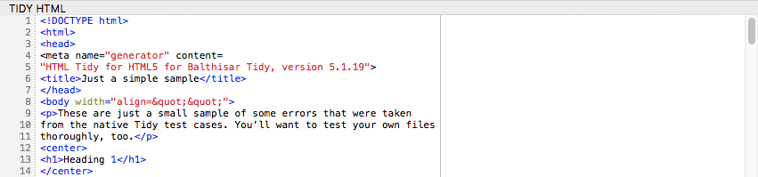
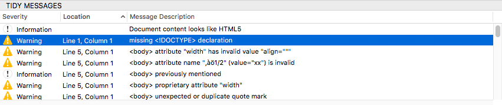

View and Edit HTML Source Text
-
Make the HTML Source view active by clicking within it or pressing the Tab key until it is selected.

-
The HTML Source pane is a standard Mac OS X text editor with some advanced features such as syntax highlighting and other functions as available in its contextual menu.
-
You can observe the effects of your edits to the Tidy’d document in the Tidy HTML pane. 
-
You can examine the diagnoses and corrections that Tidy made to the document in the Tidy Messages table. 